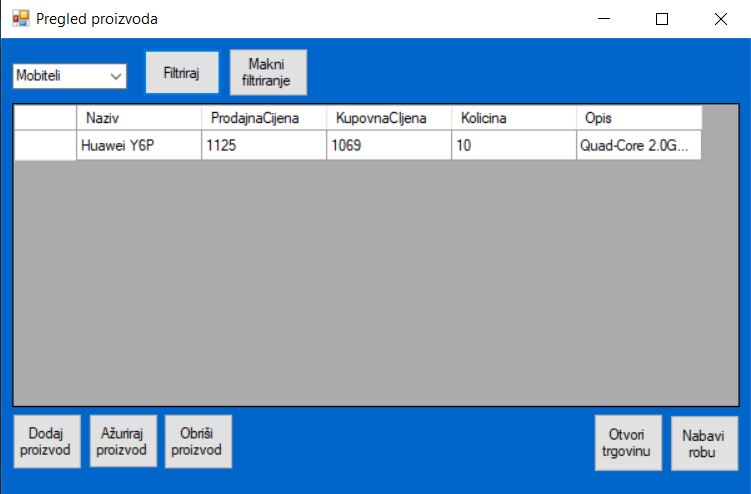

Na slici iznad možemo vidjeti formu "Pregledaj proizvod", koja nudi sedam različitih opcija: dodavanje proizvoda, ažuriranje proizvoda, brisanje proizvoda, izvršavanje kupovine, naručivanje robe, filtriranje proizvoda prema kategoriji te micanje prethodno postavljenih opcija filtriranja.
Na formi "Pregled proizvoda", najzanimljivija funkcionalnost je funkcionalnost filtriranja. Tu funkcionalnost možemo pokrenuti tako da odaberemo željenu kategoriju po kojoj želimo filtrirati podatke te pritisnemo gumb "Filtriraj"
Ako želite ažurirati ili obrisati proizvod, prvo je potrebno odabrati isti sa kataloga. To se radi klikom na redak unutar kataloga, koji predstavlja željeni proizvod. Ovisno o Vašim željama, možete nakon tog pritisnuti "Ažuriraj proizvod" ili "Obriši proizvod".
Pritiskom na gumb "Makni filtriranje" mičemo prethodno odabrani 'filter' te se katalog proizvoda vraća u početno stanje.